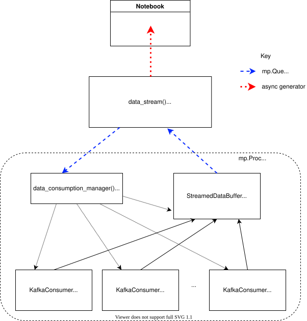
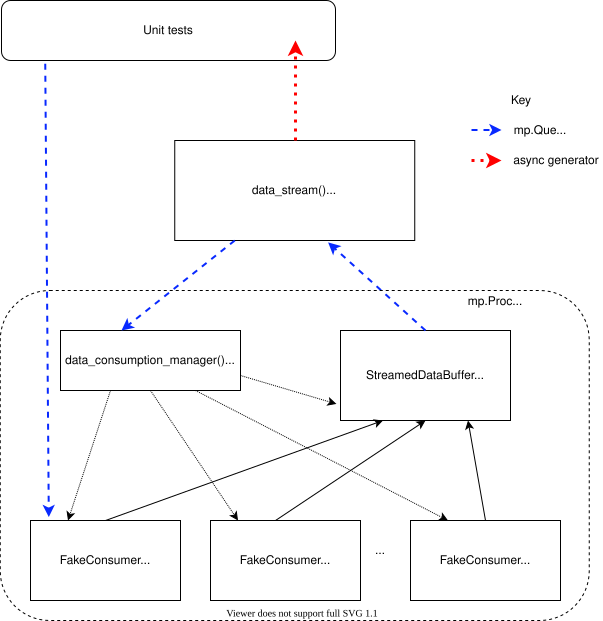

Data Streaming#
The data streaming interface provides access to data in the ESS data streaming system. The functionality
is included in scippneutron rather than the facility-specific ess library as
the same system is also used to varying extents at other neutron sources including ISIS
Pulsed Neutron and Muon Source, SINQ: The Swiss Spallation Neutron Source, and ANSTO:
Australian Centre for Neutron Scattering.
Apache Kafka#
The ESS data streaming system is based on the Apache Kafka data streaming platform. The basic terminology used in the scippneutron codebase is described here, but the introductory documentation at https://kafka.apache.org is well worth 5-10 minutes of your time.
Apache Kafka is a publish-subscribe system for passing data over the network. A producer client publishes data to a named data stream, a topic, on a Kafka server, a broker. Kafka brokers are usually deployed as a cluster to increase the data throughput they can support and also provide data and service redundancy in case a broker goes down due to failure or to be updated etc. Consumer clients subscribe to data on one or more topics.
On the brokers messages received from producers are written to disk in one or more log files per topic. These log files are called partitions. The position of each message in the partition is called the offset. Messages older than a configurable time are deleted, so the first available offset in each partition may not be 0. Consumers have control over what offset they read from, so they can start consuming the stream from the oldest available message, the latest message, or at from the next available message after a specified time.
Many libraries are available for the Client API; to implement producer and consumer applications. In
scippneutron we use confluent-kafka-python
which is based on a high performance C implementation librdkafka.
Note, messages published to Kafka are often called events, but this terminology is avoided in
scippneutron as we usually use this term for “neutron detection events” specifically.
Terminology:
Topic - a named data stream
Partition - a log file, one or more per topic
Offset - the position of a message in a partition
Broker - Kafka server, usually deployed as a cluster
Consumer - a client application which subscribes to data on Kafka
Producer - a client application which publishes data to Kafka
FlatBuffers#
Kafka does not dictate how data are serialized to be transmitted in a message over the network.
The ESS streaming system uses FlatBuffers for serialization.
Data to be serialized with FlatBuffers are described by an IDL schema, the FlatBuffer compiler flatc
can be used to generate code from the schema which provides a builder class with which to construct
the serialized buffer, as well as methods to extract data from the buffer.
Each type of data, for example neutron detection events, sample environment measurement, experiment run start event, etc has an associated FlatBuffer schema. These are stored in a repository ess-dmsc/streaming-data-types. The ESS has also developed a Python library to provide a convenient “serialize” and “deserialize” method for each schema ess-dmsc/python-streaming-data-types, this is available as a conda package https://anaconda.org/ess-dmsc/ess-streaming-data-types.
Each schema file defines a file_identifier, which comprises 4 characters. These are the first 4
bytes in the serialized buffer. It is ESS convention to also use these 4 characters in the schema
filename and the module name in the streaming-data-types python library. If breaking changes are
made to a schema, such as changing field names or removing fields, then a new file_identifier is
defined.
Below is a list of the FlatBuffers schemas used by scipp, along with a few informative notes on each schema.
Schema |
Name / link |
Notes |
|---|---|---|
Run start message |
|
|
Run stop message |
|
|
Event data |
|
|
Slow metadata |
|
|
Fast metadata |
|
|
Chopper timestamps |
|
It may be worth noting that we have found extracting data from serialized FlatBuffers in Python to be efficient, but serializing can be much more efficient in C++, particularly if serializing a large number of small buffers.
Architecture#
The interface to streamed data is scippneutron.data_stream() and is an asynchronous generator.
It is run like this
async def stream_func(): async for data in data_stream(*args): ... streaming_task = asyncio.create_task(stream_func())
Each chunk of data yielded by data_stream contains the data collected from the streaming system
during the configurable time interval since the previous chunk was yielded. Each data chunk is a
DataArray of neutron detection events of the same format that is obtained by loading a NeXus file
with load_nexus. The DataArray has detection event weights as value, these are always 1 for
data from the streaming system, coordinates of tof, detector_id and pulse_time and metadata
logs as attributes. Metadata logs are each themselves a DataArray with a time coordinate. The logs
are each nested in a Variable as they do not share coordinates with each other or the event data.
It is up to the user to concatenate data from the stream if they wish to
accumulate events. This will consume memory rapidly for instruments with high event detection rates
so perhaps a more likely scenario is for the user to do a reduction workflow step in the data_stream
loop and accumulate the result, for example sum a histogram.
The architecture of the implementation under data_stream() is sketched in the following diagram.
{kind=link}

data_stream has a Kafka topic argument in which to find “run start” messages. It looks for
the last available run start message.
The message contains some data known at the start of an
experiment run, for example instrument geometry. These data are yielded from the generator as
the first chunk of streamed data, as a DataArray in the same format as subsequent chunks.
The run start message also contains details of all the other data sources important to the
experiment and where to find their data on Kafka. This information is passed to the
data_consumption_manager() which is started in a separate multiprocessing.Process.
data_consumption_manager() creates a StreamedDataBuffer which comprises buffers for data
from each data source known about from the run start message. data_consumption_manager() also
creates a KafkaConsumer for each partition in each Kafka topic associated with the data sources.
It starts a threading.Thread in each KafkaConsumer which polls the consumer’s internal queue.
If any data have been collected by the consumer they are passed to the buffer via a callback function.
It also starts a threading.Thread in the buffer which periodically puts all all data collected
in the buffer as a single DataArray into a multiprocessing.Queue for the data_stream
generator to yield. The buffer is responsible for checking the flatbuffer id of each message it
receives from the consumers, deserializing the message, checking the source name matches a data
source named in the run start message, and if so adding the data to the buffer. If a single
message exceeds the buffer size a warning is issued to the user and the data is skipped. If multiple
messages arrive which collectively exceed the buffer size before the buffer has put its data on
the queue and reset, then the buffer puts its data on the queue early.
data_consumption_manager() is also responsible for stopping the StreamedDataBuffer thread
and all KafkaConsumer threads to stop when it receives a stop event in a
multiprocessing.Queue shared with data_stream. This allows everything in the data consumption
process to be cleanly stopped at a request from the main, notebook, process.
A note on the choice of using threading.Thread, multiprocessing.Process and asyncio:
asyncioandthreadingeach provide concurrency but not parallelism.threadingwas the most simple approach to run loops polling the consumer buffers.asyncioprovides a convenient way to allowdata_streamto run while retaining interactivity of plots in the notebook. It makes use of the same asyncio event loop which thematplotlibnbaggbackend uses.multiprocessing.Processallows us to move most of the work of consuming and aggregating the data inscippdatastructures onto a different CPU core to the one being used for updating plots etc in the notebook.
Unit Testing#
For unit tests it would be convenient to use a fake consumer object in place of KafkaConsumer
instances. However, any input arguments or variables passed via the queue to the mp.Process
must be pickleable or mp.queues.Queue. This makes dependency injection difficult. To get around
this an enum can be passed via data_stream to the data_consumption_manager to tell it
to create instances of FakeConsumer instead of KafkaConsumer, additionally an mp.queues.Queue
can be provided and is passed to the FakeConsumer. The FakeConsumer simply polls for messages
on the queue instead of Kafka, thus allowing the test to provide the messages. There is no other
configuration of FakeConsumer possible or necessary.
{kind=link}

Manual Testing#
Testing the full, real implementation, of scippneutron’s interface to the streaming
system requires running a Kafka server and populating it with neutron data. The most
convenient way to do this on a developer machine is to use docker containers.
Setup#
Install Docker Engine on your system.
If on Linux, do not forget to add your user to the “docker” group,
see documentation.
Install the docker-compose conda package.
Run Test#
To start up a Kafka broker navigate to the docs/developer/data_stream
directory and run
docker-compose up
Ctrl+C cleanly stops the running containers when you are done.
To populate Kafka with data the NeXus Streamer tool can be used. This is available as a conda package https://anaconda.org/ESS-DMSC/nexus-streamer. Run it from the conda environment and point it at a NeXus file, for example for the AMOR instrument
nexus_streamer --broker localhost --instrument AMOR --filename /path/to/nexus/file/amor.nxs -s -z
see readme or use --help for an explanation
of the args.
If you are in doubt whether data has reached Kafka you may want to use the kafkacow command line tool to query the Kafka server, see installation instructions.
For example, to check data topics on the Kafka server
kafkacow -L -b localhost
you should see output something like this
1 brokers: broker 1 at 0.0.0.0:9092 10 topics: "AMOR_sampleEnv" with 1 partitions: partition 0 | Low offset: 0 | High offset: 295782 | leader: 1 | replicas: 1, | isrs: 1, "AMOR_events" with 1 partitions: partition 0 | Low offset: 0 | High offset: 6271 | leader: 1 | replicas: 1, | isrs: 1, ...
and you can view the event data with
kafkacow -C -b localhost -t AMOR_events
output:
Mon 12-Apr-2021 13:30:56.903 || 2021-04-12T13:30:56.903 Timestamp: 1618234256903 || PartitionID: 0 || Offset: 1150 || File Identifier: ev42 || { detector_id: [ 61985 62379 62126 ... truncated 756 elements ... 120485 ] message_id: 1149 pulse_time: 1618234368838996887 source_name: NeXus-Streamer time_of_flight: [ 12379936 14495801 14658190 ... truncated 756 elements ... 36832880 ] } ...
Try using scippneutron.data_stream, for example
import scipp as sc import numpy as np plot_data = sc.zeros(dims=("y", "x"), shape=(288, 32), dtype=np.int32) # float64 det_plot = sc.plot(plot_data, vmax=1000) det_plot.set_draw_no_delay(True) det_plotimport asyncio import scippneutron as scn from scippneutron.data_streaming.data_stream import StartTime async def my_stream_func(): detector_ids = sc.Variable(dims=["detector_id"], values=np.arange(32*288).astype(np.int32)) async for data in scn.data_stream('localhost:9092', run_info_topic="AMOR_runInfo", start_time=StartTime.START_OF_RUN, interval=2. * sc.units.s): events = sc.bin(data, groups=[detector_ids]) counts = events.bins.sum() if "tof" in counts.dims: counts = counts["tof", 0].copy() plot_data.values = plot_data.values + sc.fold(sc.flatten(counts, to="detector_id"), dim='detector_id', sizes={'y': 288, 'x': 32}).values det_plot.redraw() streaming_task = asyncio.create_task(my_stream_func())
If it is being used in a notebook, data_stream can be stopped by pressing the stop button in the widget.
As stop_time=StopTime.END_OF_RUN has been specified it will automatically stop when it reaches the end
of the data run published by the NeXus Streamer.
Clean Up#
After you are done testing you can clean up the containers and free up used disk space by running
docker rm -v data_stream_producer_1 docker rm -v data_stream_kafka_1